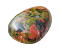

Maze.Com, a Plan

Our build plan consists of two phases, each yielding a prototype that illustrates the basics of our eventual product. The first phase concerns the logic of playing games, the second one communication.
The goal of the first phase is to build a complete game implementation, including game observers and possibly GUI-based players. This phase will thus implement the core of the system, including house players.
the basic game pieces such as the board, the tiles, a way to specify positions;
the What might these two italicized words mean? game state, i.e., the knowledge that the omniscient referee or a somewhat-ignorant player has about the game pieces;
the referee-player interface with a player implementation plus a rudimentary strategy implementations; and
Note Once we have a player interface, we could actually ask some early adopters to write an implementation in our chosen language. It would provide some first insight on whether our formulation suffices.
the referee itself, which sets up games; runs turns and checks the validity of the players’ actions; determines when the game is over, scores a game, and informs players of the outcome.
The goal of the second phase is to break up this monolithic prototype into server and client pieces. The server will sign up clients and employ the manager to run games. The client will connect the existing player components to the server. For this step, we will use the remote proxy pattern to “splice” in communication components and separate the logical components. If we have debugged the logic well enough, any bugs that show up now are mostly likely to be in the communication components.
At this point, we can demonstrate this system to our investors as the alpha release of our product.
Warning Of course, milestones may change as the project evolves. So, like with all software projects, the co-CEOs may have to adapt this plan as experimentation with the prototypes suggests changes.